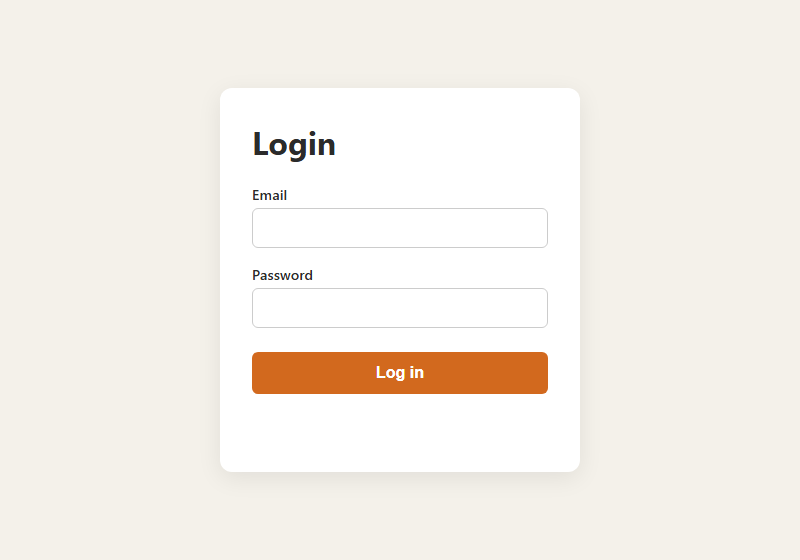
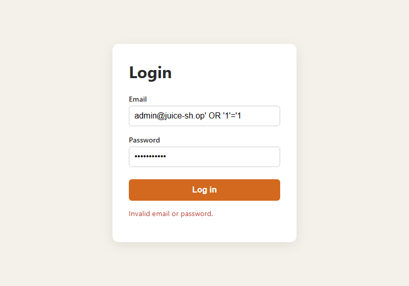

GitHub repository: https://github.com/cmangalwedhe/csce-477-hw2
I spent some time going through the Juice Shop demo and found three things worth
writing up. The first is the login page. If you type ' OR 1=1-- into the
email box with any password, it logs you straight in as the admin, because the app drops
your input directly into the SQL string. The second is the search bar, which echoes your
search term back onto the page without cleaning it, so
<iframe src="javascript:alert(1)"> actually runs. The third is weak
login protection: there is no limit on password attempts, so an account can be brute
forced. To stop these I would use parameterized queries so input is only ever data,
encode anything printed back to the page and add a Content-Security-Policy header, and
hash passwords with bcrypt while limiting login attempts. Below is how I would store and
check a password.
const bcrypt = require("bcryptjs");
// On registration, store only the salted hash (cost factor 12):
const hash = bcrypt.hashSync(plaintextPassword, 12);
// On login, compare without ever storing or logging plaintext:
const ok = bcrypt.compareSync(submittedPassword, hash);For the form I made a login page with email and password fields, styled to look a bit
like Juice Shop's. The JavaScript checks that neither field is empty, that the email
contains an @, and that the password is at least 8 characters before it sends
anything. I did not want to rely on that alone, since anyone can skip the browser and hit
the server directly, so the Node/Express backend runs the same checks again. Passwords are
stored as bcrypt hashes, the database lookup uses a parameterized query, every failed
login returns the same message so you cannot tell which accounts exist, and there is a
limit of 10 attempts per 15 minutes. You run it with npm install and then
npm start, and open http://localhost:3000.

Figure 1. The login form running on localhost.
Then I tried to break my own form. I used the classic
admin@juice-sh.op' OR '1'='1 in the email box, also a plain
' OR 1=1--, and an XSS attempt <script>alert(1)</script>@x,
testing each one both in the browser and with curl. None of them worked. Every attempt came
back with "Invalid email or password," no login and no popup. The injection fails because
the query treats my input as a plain string that does not match any user, and the status
text is set with textContent, so the script tag just shows up as literal text
instead of running. To make sure it was not luck, I wrote a small script using the old
string-building style of query, and there the exact same payload logged in and returned the
admin row. So the thing that actually protected me was using parameterized queries. If the
form had been built the naive way, switching to prepared statements is the fix.

Figure 2. The SQL injection payload in the email field is rejected.
The output from my tests is below.
=== SQL injection auth-bypass attempt ===
{"success":false,"message":"Email must contain '@'."}
=== injection with valid-looking email ('admin@juice-sh.op' OR '1'='1) ===
{"success":false,"message":"Invalid email or password."}
=== XSS payload in email field ===
{"success":false,"message":"Invalid email or password."}
=== correct credentials ===
{"success":true,"message":"Login successful."}
=== vulnerable-demo.js (concatenated SQL, same payload) ===
Executed query: SELECT * FROM users WHERE email = 'admin@juice-sh.op' OR '1'='1'
Leaked row: { id: 1, email: 'admin@juice-sh.op', password_hash: 'real-hash' }
Rows returned: 1 -> AUTH BYPASS SUCCEEDED
Parameterized version with same payload -> matched NO rows (injection neutralized).